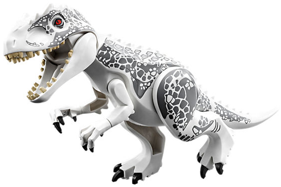

Le dinosaure Indominus Rex, alias I-Rex, est un dinosaure hybride obtenu par manipulation génétique, totalement imaginé pour les besoins du film «Jurassic World». Un terrible DHGM, Dinosaure Hybride Génétiquement Modifié, plus gros, plus bruyant et avec plus de dents. 